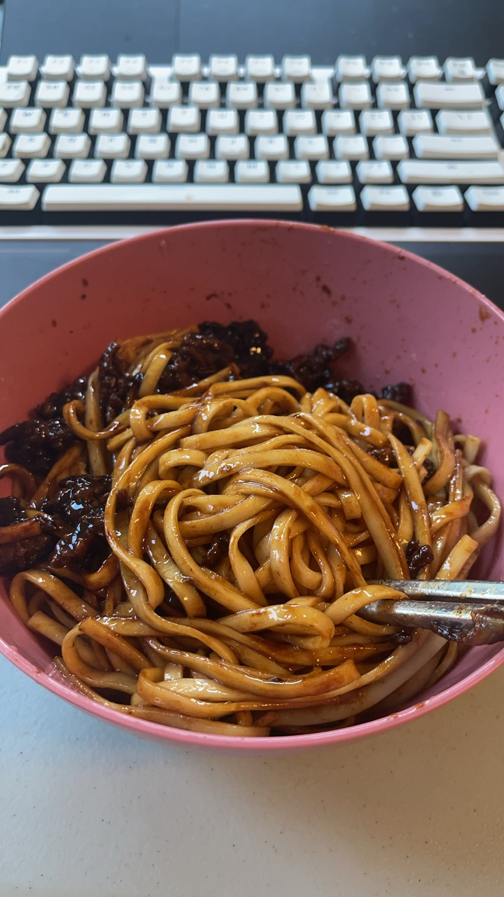

Cooking Chinese food is not just a hobby; it's a passionate exploration of culture and history through flavors and techniques that have been refined over millennia. Each dish offers a symphony of tastes and textures, embodying the balance of the five flavors: sweet, sour, salty, bitter, and umami. As I prepare dishes like Kung Pao chicken or Szechuan beef, I am meticulous about the ingredients, ensuring they are fresh and authentic, which often means trips to specialty Asian markets. The process of chopping vegetables, marinating meats, and stir-frying ingredients becomes a meditative practice, connecting me to culinary traditions passed down through generations. The aroma of spices like star anise, Sichuan peppercorns, and ginger fills the kitchen, creating an inviting warmth. Cooking Chinese food requires mastery of various cooking methods, from quick stir-frying at high heat to the slow simmering of soups, each method unlocking different textures and enhancing flavors. Sharing these dishes with family and friends brings joy and a sense of accomplishment, as the table bursts with color from plates of steaming dumplings, vibrant stir-fried vegetables, and rich, aromatic sauces. This hobby enriches my life, offering both a creative outlet and a delicious way to explore and honor an incredibly rich culinary heritage.
